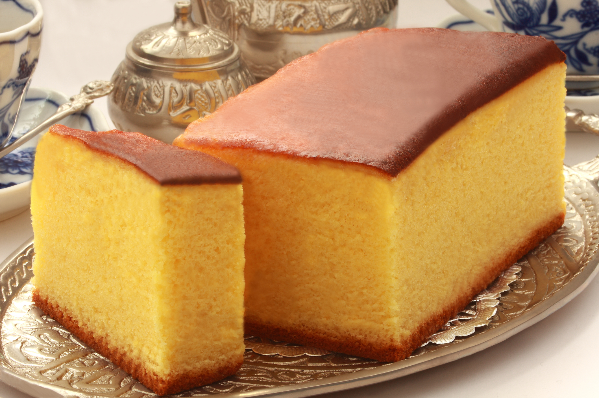

Mantecada

Mantecada is a traditional pastry product from Spanish city Astorga, in Province of Leon.
It's usually taken as part of breakfast or as a snack.
Ingredients
- 250gr of cornmeal
- 50gr of flour
- 200gr of sugar
- 200gr of butter
- 4 egg yolks
- 4 egg whites
- 2 tablespoons of milk
- 1 tablespoons of baking soda
Steps
- Cream the sugar with the butter
- While the butter and sugar are creaming, weigh out the dry ingredients:
cornmeal, wheat flour and baking soda. Mix very well until integrated.
- After creaming the sugar with the butter, add the yolks of the four eggs.
Mix until everything is combined. Once you add the yolks to the mixture,
add the dry ingredients and beat very well.
- Transfer the entire mixture to a bowl. In another container add the egg
whites and beat them until they have a stiff consistency. When you have
this process ready, take out the beaten egg whites and take them to the bowl
where the first dough is, incorporate and mix with your hands.
- Add the tablespoons of milk and continue mixing.
- Grease a mold with butter and place the dough in it. Spread it so that it is
well distributed and put it in the oven at 180 degrees Celsius,
for approximately 30 or 35 minutes.
- Check it constantly and when it has a golden color it is ready to try it.